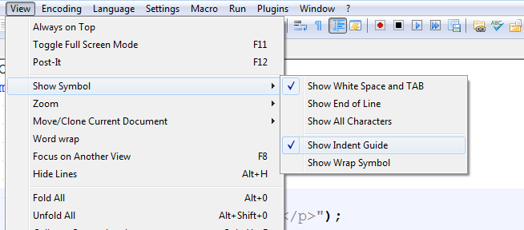

Required Notepad++ Settings
File: /unit1/notepadSettings.html
Here are the required Notepad++ settings for the course.
If these settings are not correct you can lose points in your projects!
Settings Menu
- Select the Settings-->Preferences menu item:

- In the same dialog box, click on the "Language / Tab Settings":

- In this dialog box make sure the following options are set:
- Tab Setting-->Tab size: 2
- Tab Setting-->Replace by Space
checked
- Select the View menu and in the Show Symbol menu item check, "Show White Space and TAB".

With that, your environment is all configured and you're ready to work on the rest of the labs for this course.